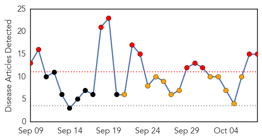
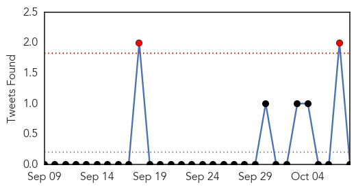
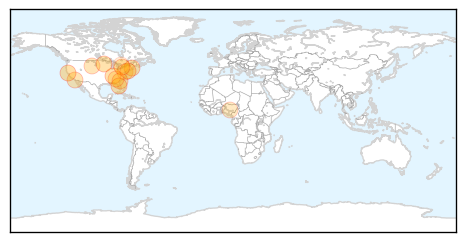
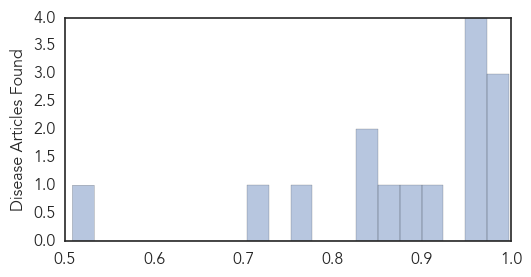

Influenza
30-Day Web Trend
11 alerts, 11 warnings

30-Day Twitter Trend
0 alerts, 0 warnings

Article Locations
Article Confidences
Top Articles:
- 0.997
- Health officials: Take sickness seriously
- 0.996
- Washoe Health Officials Await Enterovirus Test Results
- 0.995
- Holyoke Soldiers Home sets flu vaccine clinics
- 0.971
- Fight the flu Get your flu shot
- 0.970
- Flu vaccine coming late from manufacturing problems
- 0.961
- WTOC-TV: Savannah, Beaufort, SC, News, Weather & Sports
- 0.961
- Polk County: First EV-D68 case in Florida recovering, call on public to be vigilant against respiratory infections
- 0.902
- Health Department offering flu shots
- 0.888
- Do-it-yourself flu vaccine? Study shows it works
- 0.872
- N.S. health-care workers could face mask or flu shot policy
- 0.840
- South Dakota reports first flu detections of season
- 0.827
- Do-it-yourself flu vaccine? Study shows it works
- 0.769
- Mathuram Santosham Receives 2014 Fries Prize for Improving Health
- 0.722
- NLC canvasses support for W'Africa on Ebola
- 0.508
- model airplane pilots, consult your manuals
Top Tweets:
-
No tweets found for Oct 08, 2014
Dengue Fever
30-Day Web Trend
2 alerts, 5 warnings

30-Day Twitter Trend
0 alerts, 2 warnings

Article Locations

Article Confidences

Top Articles:
- 0.999
- Ministry of Health updates on threats from viral diseases
- 0.995
- Southern China suffering from its worst outbreak of dengue fever in two decades
- 0.989
- 38 test positive for dengue in Alwar
- 0.985
- China Faces Growing Dengue Fever Outbreak
- 0.982
- Spurt in dengue cases, hospitals gearing up
- 0.976
- Study: India vastly under-reporting dengue fever cases
- 0.969
- Number of people affected with dengue in India maybe 300 times higher than what is officially reported: ICMR study
- 0.964
- City administration clueless to fight dengue
- 0.949
- 2014 Dengue Outbreak in China Worst in 20 Years
- 0.907
- 6 Die In Dengue Virus Outbreak In Southern China That Has Infected More Than 23,000
- 0.811
- Commissioner, DCO visit hospitals
- 0.706
- City spraying for disease-carrying mosquitoes
- 0.692
- Private hospitals directed to inform NMC about dengue patients or face registration cancelled
Top Tweets:
- 0.618
- Flavivirus news: China Facing Mosquito-Borne Dengue Fever Epidemic - Businessweek: Businessweek... http://t.co/EsSg6zFRpe pathogenposse